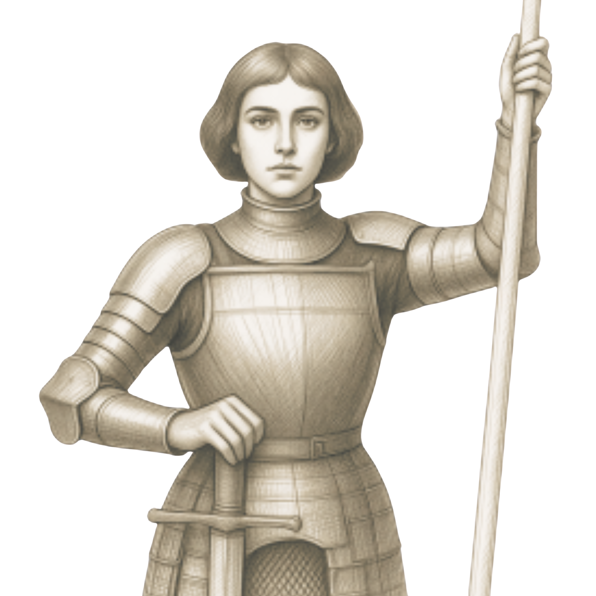
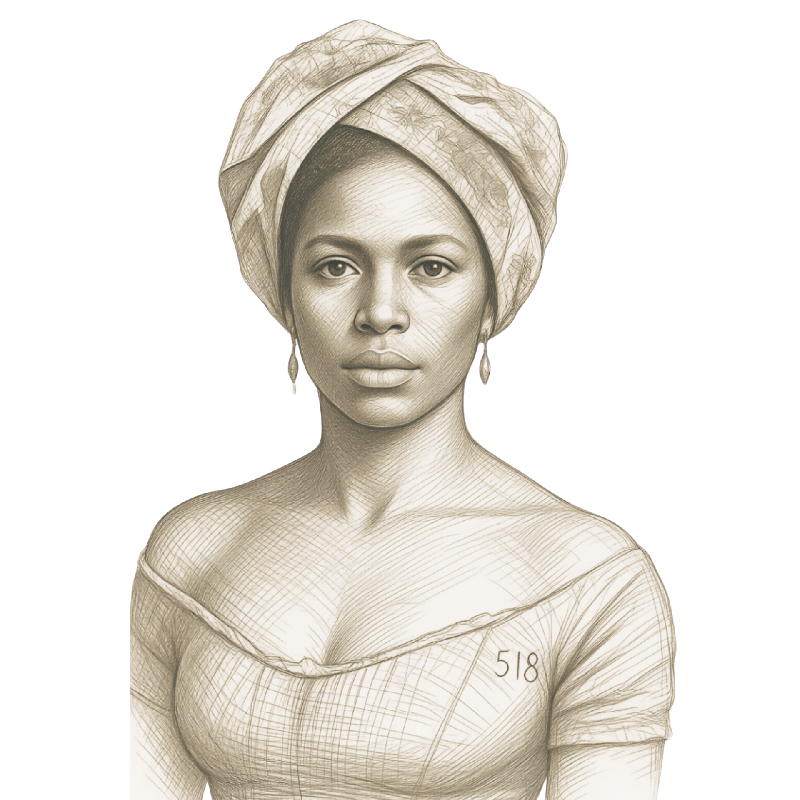
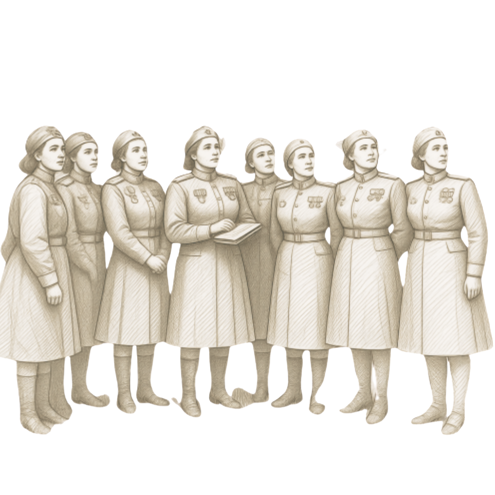
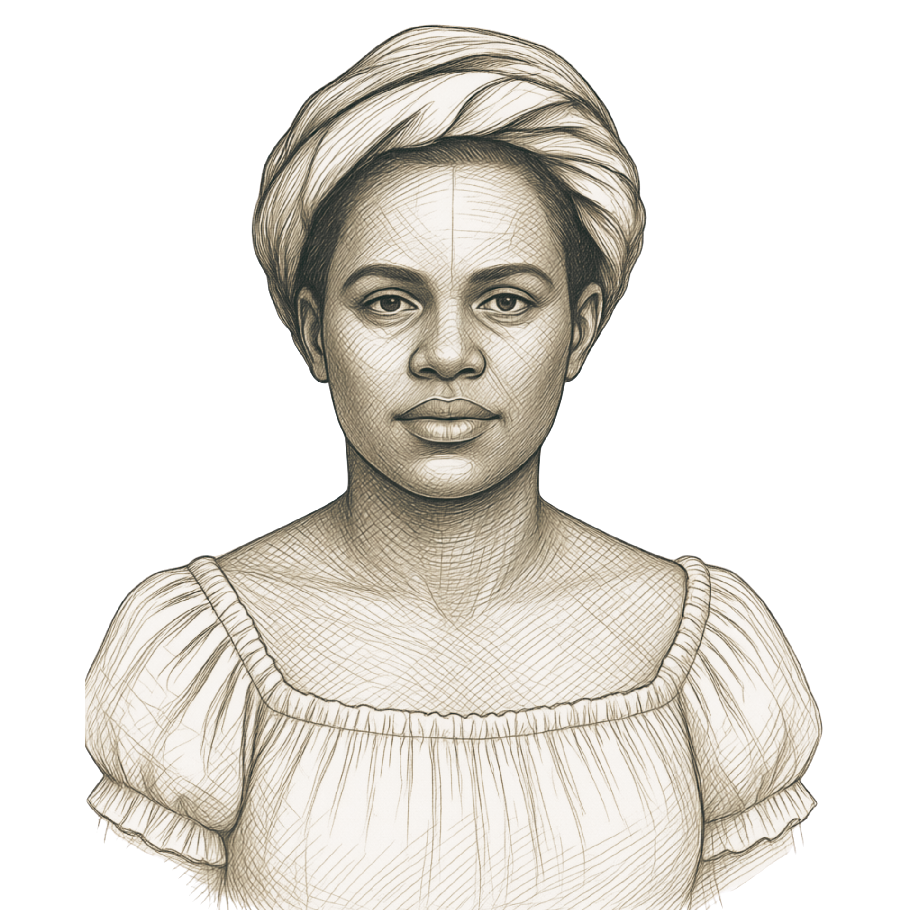
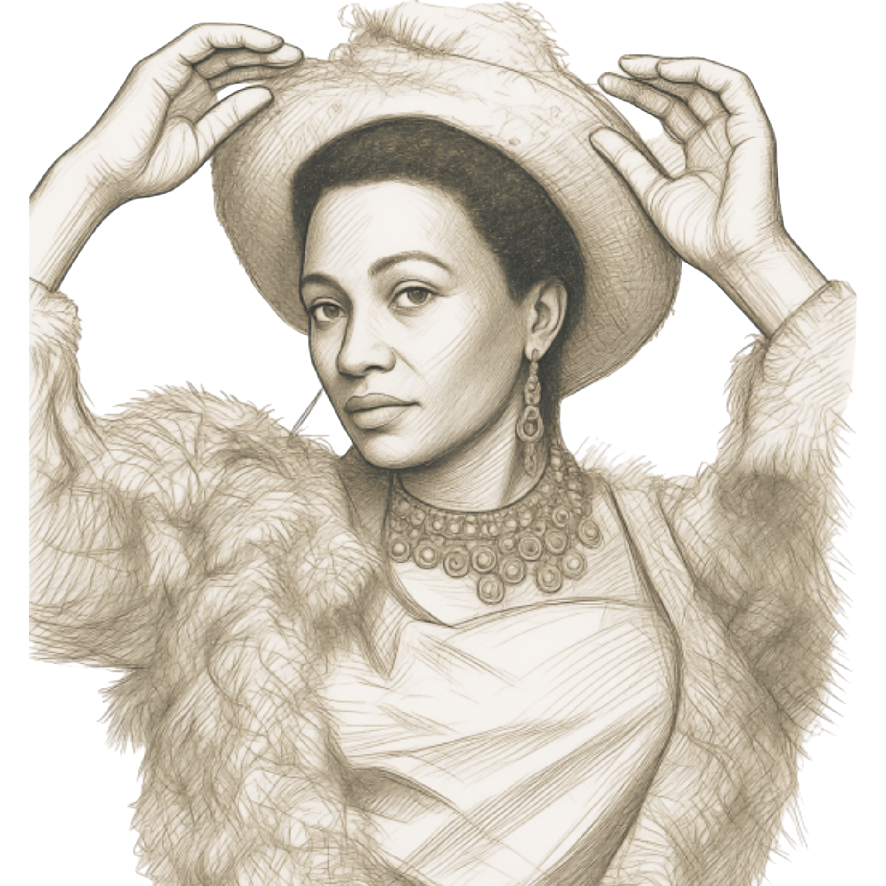
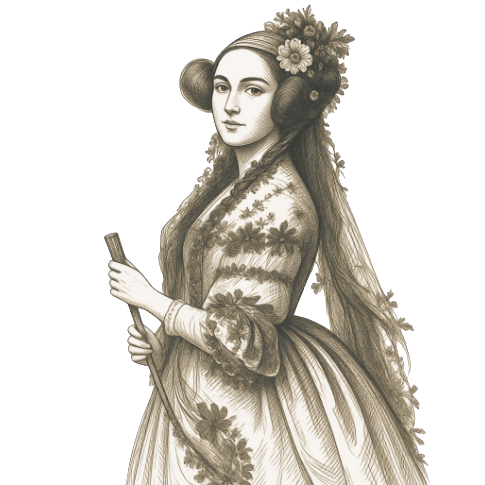
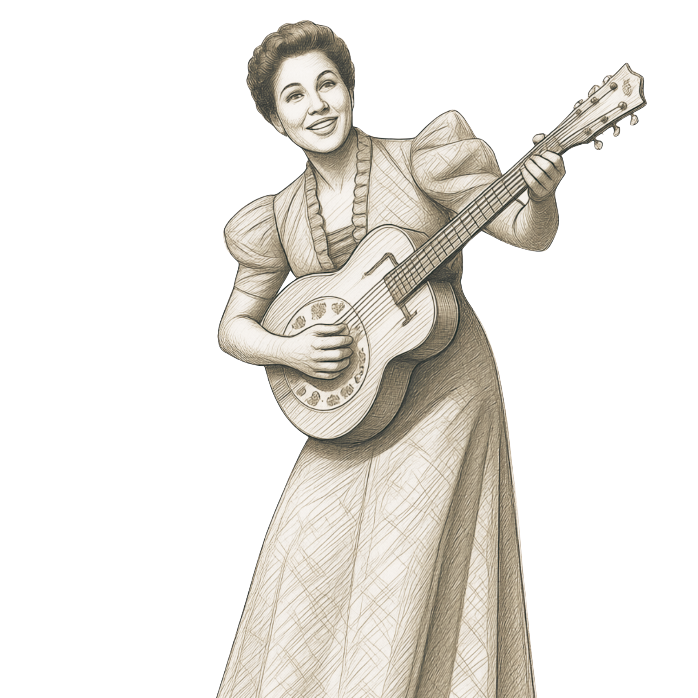

Mulheres que
Transformaram a História
Conheça a vida e o legado de mulheres que desafiaram padrões, abriram caminhos e deixaram marcas permanentes na ciência, literatura, política, tecnologia, música e sociedade.

Joana d'Arc
Heroína francesa que liderou tropas durante a Guerra dos Cem Anos.






Maria da Penha
Inspirou a criação da principal lei brasileira contra violência doméstica.
Ver história →